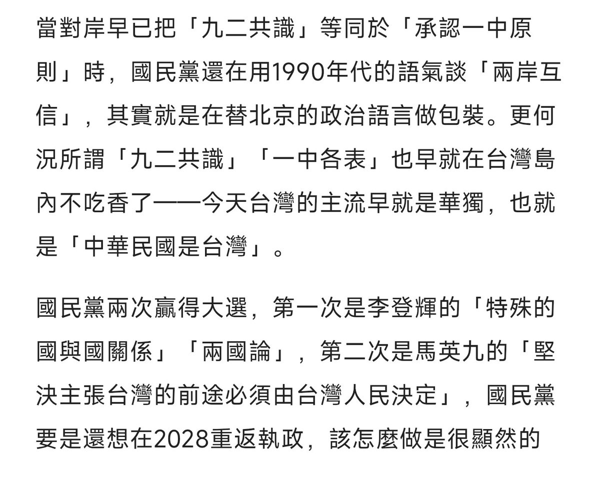

𝐀𝐬𝐡𝐥𝐞𝐲 𝐁𝐥𝐨𝐜𝐤🍥🌹🇹🇼🏳️⚧️
@bolckAshley
「九二共識」最初的含義是「一個中國，各自表述」，它建立在互相承認彼此存在、願意平等溝通的前提上
但今天「九二共識」中的「一中」早就悄悄成了PRC🇨🇳，但國民黨卻依然抱著這個被北京篡改本意的詞不放，無視所謂「各自表述」已被對岸否定的事實
這樣的態度，不是務實，而是自我麻醉

生力麵🏳️⚧️🍥
@sanmiguelnoodle
新華社民國一一四年十月十九日消息
習近平以「中共中央總書記」的身分致電鄭麗文，祝賀其當選為中國國民黨主席。
習近平指出，多年來兩黨在堅持「九二共識」和反對「台獨」的共同政治基礎上，推動兩岸交流合作，致力維護台海和平穩定，增進兩岸同胞親情福祉，成效積極。 https://t.co/vqrHYVd0ZM